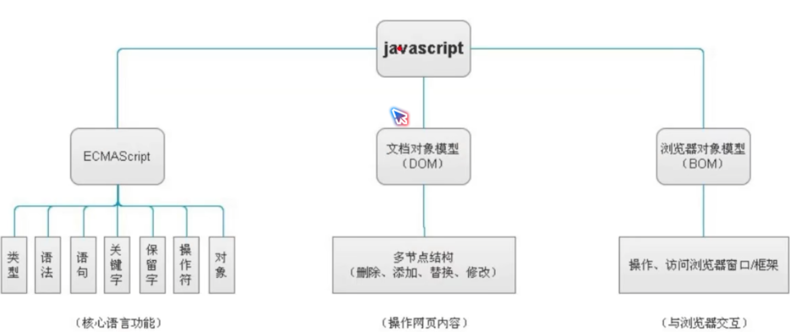

JS简史
前言
JavaScript基础
-
JavaScript发展历史
34岁的系统程序员Brendan Eich ,1955年4月，用10天时间把JavaScript设计出来
- 借鉴C语言的基本语法
- 借鉴Java语言的数据类型和内存管理
- 借鉴scheme语言，将函数提升到"第一等公民"(first class)的地位
- 借鉴self语言,使用基于原型(prototype)的继承机制
-
JavaScript的组成
浏览器 内核 JS引擎 IE Trident内核 JScript Firefox(火狐) Gecko内核,俗称Firefox内核 firefox3.0及其一下;
spiderMonkey
fireFox3.1及其以上
TraceMonkeyGoogle chrome(谷歌) chromeium内核或chrome内核,以前是webkit内核,现在是blink内核 V8 safari(苹果) Webkit内核 safari3.1及其以下
JavaScript core
safari4.0
squirrelFishOpera(欧朋) 最初是自己的presto内核,后来是webkit,现在是Blink内核 opera9.5及其以上:Futhark -
JavaScript具体包括什么

语言解释：
- ECMAScript:定义了JavaScript的语法规范，描述了语言的基本语法和数据类型
- BOM (Browser Object Mode):浏览器对象模型 —— 有一套成熟的可以操作浏览器的API,通过BOM可以操作浏览器.比如:弹出框、浏览器跳转、获取分辨率等
- DOM (Document Object Mode):文档对象模型 —— 有一套成熟的可以操作页面元素的API，通过DOM可以操作页面中的元素。比如：增加个div，减少个div，给div换个位置等
-
总结:
JS就是通过固定的语法去操作浏览器和标签结构来实现网页上的各种效果
-
学习了JavaScript能干什么
- 常见的网页效果[表单验证,轮播图………………]
- 与H5配合实现游戏[水果忍者]
- 实现应用级别的程序
- 实现图表统计效果
- JS可以实现人工智能[面部识别]
- 后端开发、APP开发、桌面端开发……………………
-
JavaScript代码的书写位置
- 和CSS一样,JS可以有多种方式书写在页面上让其生效
- 行内式、内嵌式、外链式